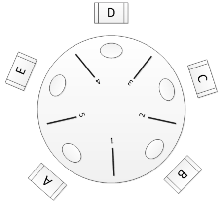

2.2.x 同步问题例子 | Synchronization Problems Examples¶
约 1568 个字 51 行代码 预计阅读时间 8 分钟
The Bounded-Buffer Problem¶
问题背景¶
The Bounded-Buffer Problem 又称 The Producer–Consumer Problem，在该问题中，有两个角色，producer 和 consumer：producer 会产生 item 存放到 buffer 中，而 consumer 可以将数据从 buffer 中取出 item。如果我们用 \(n = \# items\) 来描述 buffer 的状态，那么问题将抽象为：
void produce() {
/* something */
++n;
/* something */
}
void consume() {
/* something */
--n;
/* something */
}
同时，我们需要保证 \(0 \leq n \leq n_{max}\)，所以我们需要在 \(n = 0\) 时，让 consumer 等待 \(n > 0\) 再
consume()；对应的，在 \(n = n_{max}\) 时候，让 producer 等待 \(n < n_{max}\) 再produce()。但这并不是我们在本单元提及它的重点，所以我们在这里认为它们在/* something */中。实际的 The Bounded-Buffer Problem 中还有一些其它细节，但是这里我们将整个问题抽象为我们需要的模样，请不要认为上面的代码就是 The Bounded-Buffer Problem 的全部。
问题描述¶
考虑在并行语境下，produce() 和 consume() 同时发生，由于 ++n 和 --n 这些操作本质上是数值的、需要一段时间来完成的，所以容易出现 race condition问题。
解决 - semaphores¶
我们使用信号量来解决这个问题，需要定义三个信号量：
// suppose the capacity of the buffer is n
semaphore mutex = 1;
semaphore empty = n;
semaphore full = 0;
逻辑上我们要求 empty + full == n 始终成立，但是在实际运行过程中可能会产生一定误差（考虑某个原语还没彻底执行完）。而我们这里之所以要使用两个信号量来维护一个 buffer 的占用状态，是因为信号量的“有界”是通过 0 维护的，也就是只有在“减少”的时候才能维护；而我们的要求是，buffer 的上下界都有界，所以我们需要两个信号量分别来维护两个边界。
The Readers–Writers Problem¶
问题背景 & 问题描述¶
该问题抽象自数据库的使用。用户使用数据库修改数据（UPDATE），本质上也是有三个步骤：
- [READ] 从数据库中检索、读取数据；
- 数据经过业务逻辑的处理，得到新值；
- [WRITE] 将新值写回数据库；
这个步骤与我们修改 mem[x] 的过程高度相似，因此遇到的问题也是类似的。
冲突主要体现在两种情况：
- reader 和 writer 的冲突；
- writer 和 writer 的冲突；
显然，reader 和 reader 不会有冲突。
解决 - semaphores¶
有两种种朴素的解决办法：⓵ writer 总是等待 reader，⓶ reader 总是等待 writer。但是这两种解决办法都不是很好，因为 ⓵ 会导致 writer 饥饿，⓶ 会导致 reader 饥饿。
接下来，我们给出正式的解决方法，引入两个信号量和一个共享变量：
semaphores rw_mutex = 1;
semaphores mutex = 1;
int read_count = 0;
考虑到 reader 和 reader 不会冲突，所以 readers 之间不应该互斥。而我们需要保证的是：单个 writer 和若干 readers 之间互斥，单个 writer 和单个 writer 之间互斥。而 rw_mutex 就是用于控制这种互斥。
| writer's code | |
|---|---|
1 2 3 4 5 6 7 | |
但此时如何保证 readers 之间不会互斥呢？首先，当第一个 reader 试图进入临界段时，它应当获取一个 rw_mutex，以阻止其它 writer 进入临界段。而对于之后的 reader 来说，如果目前获取锁的是一个 reader，那么它可以直接进入临界段；如果目前获取锁的不是某个 reader，那么实际上它才是第一个 reader。换句话来说，对于获取 rw_mutex 来说，我们只需要判断当前有没有 reader 正在享用临界资源即可；而对于释放 rw_mutex 来说，我们需要判断当前是不是最后一个 reader，所以实际上我们需要维护一个计数器 read_count，而由于这个计数器是个普通的共享变量，而且这个计数器本身也是个临界资源，所以我们还需要一个 mutex 来维护它。
所以，实际上 reader 的代码中含有 3 个临界段，分别是：计数器增、读取临界资源、计数器减。
| reader's code | |
|---|---|
1 2 3 4 5 6 7 8 9 10 11 12 13 14 15 16 17 | |
逻辑上，释放 rw_mutex 的 reader 不需要是申请 rw_mutex 的 reader，这也印证了这个锁维护的是整个 readers 群体的存在与否，而不是“某个 reader”的存在与否。
为什么 read_count 不使用信号量？
我们观察对 read_count 的操作，一共有三类：
read_count++；read_count--；read_count == k；
并且 read_count >= 0 应当始终成立，所以光看前两类，其实很适合直接作为信号量来维护。但是我们无法对信号量进行比较操作，所以我们是用 mutex 维护了 read_count，可以发现，所有对 read_count 的操作都是在 mutex 的保护下进行的。换句话来说，其实 read_count 和 mutex 一起构成了一个原子变量。
The Dining Philosophers Problem¶
问题背景 & 问题描述¶
在这个问题中，有五个哲学家，ta 们围坐在一张圆桌旁，每个哲学家面前都有一碗米饭，而 ta 们两两之间分别有一根筷子。
{kind=link}

每帧哲学家都能选择执行以下两个行为之一：
- 思考；
- 拿筷子；
哲学家如果想要干饭就必须有两根筷子，ta 同时 拿起 ta 左右侧筷子时，才能干饭。显然，两个哲学家不能同时拿起同一根筷子；干完饭哲学家会放下筷子。假设哲学家们都不嫌脏。
解决 - semaphores¶
显然，我们可以用信号量来维护一个筷子是否可用，就可以得到下面（有问题的）解法：
1 2 3 4 5 6 7 8 9 | |
上述方案存在问题！
考虑这种情况：所有哲学家在第一帧都想要干饭，此时它们同时运行完了第 2 行（例如，同时拿起了右手边的筷子），这时我们发现，所有筷子都被占有，没有任何一个人能等到下一个筷子，此时，哲学家们发生了死锁。
对于这个死锁，书中给出了三种解决方案：
- 允许最多 4 位哲学家同时获取筷子；
- 哲学家必须同时获取两个筷子，而不能抓一支等一支；
- 为了实现这一点，“抓筷子”这件事应当在一个临界段中完成；
- 奇数哲学家先拿左手的筷子，偶数哲学家先拿右手的筷子，这样不会产生循环等待；
解决 - monitors¶
- TODO: 不是很重要